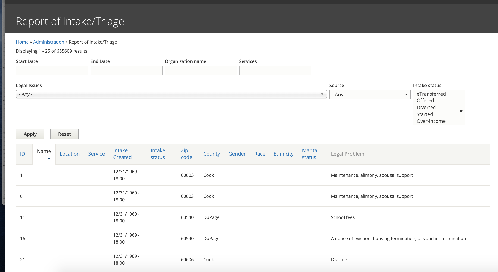

Intake/Triage Report¶
The intake & triage report includes information for users who were at least offered intake.
Report Data¶
Report data includes:
Triage ID (labeled as ID)
Organization name (labeled Name)
Location of the associated service
Service associated with the intake
Date the intake was created (Intake Created)
Intake Status (see intake statuses below)
Zip code entered by the user
County, derived from the zip code entered
Gender, if captured. Not all organizations capture gender
Race, if captured. Not all organizations capture race
Ethnicity, if captured. Not all organizations capture ethnicity
Martial status, if captured. Not all organizations capture marital status
Legal problem. The tree of legal problems the user drilled through to get to intake
Filters¶
Start and end date: Either or both can be added. This is based on intake created date. There are some instances where this field is empty. In those cases, the date will appear as 12/31/1969.
Organization: Supports partial matches to the organization name
Services: Supports partial matches to a location-services for an organization
Legal issues: Single select of a legal issue. This field is slightly problematic in that it returns only instances where the selected term matches part of the user’s drill down.
Source: this is currently legacy from D7 site to include whether the user accessed the system from a program widget or the modal (neither of which are part of the D8 site)
Intake status: this is a multi-select for different intake statuses. See the intake status legend below.
Todo
Update the legal issues filter to have depth.
Intake Statuses¶
Bypass intake - the user completed the program’s triage rules and was taken to the bypass intake message. They did not complete an intake application.
Diverted - the user completed the program’s triage rules and was diverted because of legal issue.
Offered - the user completed the program’s triage rules and was offered intake. The user did not start the intake form.
Started - the user completed the program’s triage rules, was offered intake and completed at least one page in the intake form but did not complete the application.
Eligible - the user completed the program’s triage rules, began intake and finished any financial information screens but did not complete the contact information.
Over-income - the user completed the program’s triage rules, was offered intake, completed an intake application but was over-income.
Over-asset - the user completed the program’s triage rules, was offered intake, completed an intake application but was over-asset (and not over-income).
eTransferred -the user completed the program’s triage rules, was offered intake, completed an intake application that was eTransferred to the program.